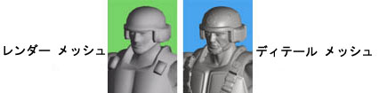
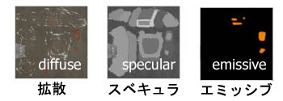
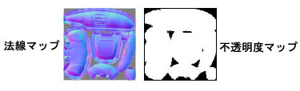
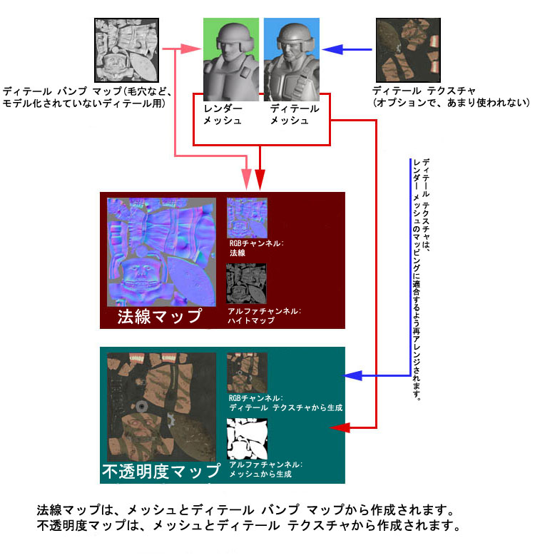

UDN
Search public documentation:
CreatingModelsJP
English Translation
中国翻译
한국어
Interested in the Unreal Engine?
Visit the Unreal Technology site.
Looking for jobs and company info?
Check out the Epic games site.
Questions about support via UDN?
Contact the UDN Staff
中国翻译
한국어
Interested in the Unreal Engine?
Visit the Unreal Technology site.
Looking for jobs and company info?
Check out the Epic games site.
Questions about support via UDN?
Contact the UDN Staff
モデルの作成
概要
開発ツール
開発資産
モデル
ゲーム中に見られるすべてのモデルについて、ハイポリ バージョンとローポリ バージョンの 2 つのモデルを作成する必要があります。2 つのモデルは、1 組のテクスチャを生成するために使用されます。詳細は、以下を参照してください- レンダー メッシュ: リアルタイムで使用するローポリ モデルです。
- ディテール メッシュ: 法線マップ作成のみに使用されるハイポリ モデルです。

テクスチャ
UnrealEngine3 で使用されるテクスチャには大きく分けて 3 つのグループがあります。マテリアルに使用するためにユーザーが作成したもの、マテリアルに使用するためにあらかじめ生成されているもの、あらかじめ生成されているテクスチャに使用するためにユーザーが作成したものの 3 つです。マテリアル用にユーザーが作成したもの
- ディフューズ: モデル用の色データの大部分が含まれます。
- スペキュラー: このテクスチャは、モデルのセクションがどれくらい反射するかを示します。これは、ディフューズマップを微調整したバージョンであるばあいがほとんどです。また時には、ディフューズマップ自体をスペキュラー マップとして使用できることもあります。
- エミッシブ: モデルに光を放射するエリアがある場合、その情報はこのテクスチャに格納されます。

プリ生成されたテクスチャ
このテクスチャは、SHTools プラグインを使用して作成されますが、3D Studio Maxの新しいバージョンにて処理されます。これらは、レンダー メッシュ、ディテール メッシュ、およびユーザーが作成したマテリアルから生成されます (以下参照)。- 法線マップ: このテクスチャは、エッジ ハイライトやシャドウを追加することで、モデルの現実性を大きく増大させます。
- ハイト マップ： 法線マップが作成された時に生成され、 法線マップのアルファ チャンネルに保存されますバンプオフセット マッピング (ParallaxTest マップを参照) のために使用されますが、ほとんどの場合、法線マップを DXT1 で圧縮する方が適しているため、アルファ チャンネルのハイト マップは破棄します。
- オパシティマップ: このシングルチャンネル テクスチャは、単に、マテリアルのオパシティレベルを示します。

あらかじめ生成されたテクスチャ用にユーザーが作成したもの
このテクスチャは、法線マップとオパシティマップ (上記参照) の生成に使用されます。- ディテール バンプ マップ: SHToolsを使用する前にレンダー メッシュに適用されます。ディテール メッシュでは見られない細かな詳細を保持し、法線マップに適用されます。たとえば、ディテール バンプ マップに毛穴や傷をつくります。 注: このテクスチャ名は誤解を招く恐れがあります。このテクスチャは、レンダー メッシュに適用されるもので、ディテール メッシュには適用されません。このテクスチャはオプションで、法線マップは、ディテールバンプマップがなくても生成されます。
- ディテール テクスチャ: このテクスチャはディテール メッシュに適用され、オパシティマップが生成されるときに考慮に入れられます。ディテール テクスチャを作成する必要はありません。ディテール テクスチャがディテール メッシュに適用されない場合でも、オパシティマップは生成されます。
ゲーム中の資産リスト
正確を期すために、必最終モデルには次のアート資産を次に挙げておきます (オプションの場合括弧で示されています)。- レンダー メッシュ
- ディフューズマップ
- スペキュラーー マップ (オプション)
- エミッシブ マップ (オプション)
- 法線マップ
- ハイト マップ (アルファ チャンネル内。オプション性が高い)
- オパシティマップ
フローチャート
